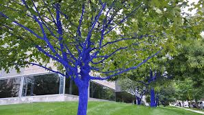
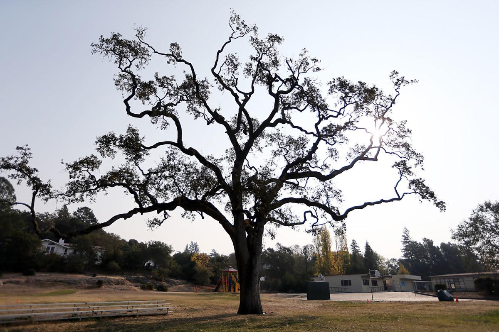
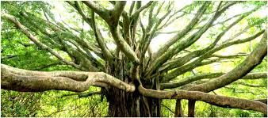

The following are some statistics on just how important trees are in a community setting.
The net cooling effect of a young, healthy tree is equivalent to ten room-size air conditioners operating 20 hours a day. U.S. Department of Agriculture
If you plant a tree today on the west side of your home, in 5 years your energy bills should be 3% less. In 15 years the savings will be nearly 12%. Dr. E. Greg McPherson, Center for Urban Forest Research
A mature tree can often have an appraised value of between $1,000 and $10,000. Council of Tree and Landscape Appraisers
Having large trees in yards along streets increases a home’s value from 3 percent to 15 percent. Wolf, Kathleen L, PhD, University of Washington (2007) City Trees and Property Values. Arborist News. 16, 4:34-36.
In Portland, Oregon, street trees increase the value of homes by a total of $1.1 billion, an average increase of $7,020 for each house. Donovan, G.H.; Butry, D.T. (2010). Trees in the City: Valuing Street Trees in Portland, Oregon. Landscape and Urban Planning 94:77-83.
Landscaping, especially with trees, can increase property values as much as 20 percent. Management Information Services/ICMA
One acre of forest absorbs six tons of carbon dioxide and puts out four tons of oxygen. This is enough to meet the annual needs of 18 people. U.S. Department of Agriculture
There are about 60– to 200-million spaces along our city streets where trees could be planted. This translates to the potential to absorb 33 million more tons of CO2 every year, and saving $4 billion in energy costs. National Wildlife Federation

Trees properly placed around buildings can reduce air conditioning needs by 30 percent and can save 20–50 percent in energy used for heating. USDA Forest Service
Trees can be a stimulus to economic development, attracting new business and tourism. Commercial retail areas are more attractive to shoppers, apartments rent more quickly, tenants stay longer, and space in a wooded setting is more valuable to sell or rent. The Arbor Day Foundation
Healthy, mature trees add an average of 10 percent to a property’s value. USDA Forest Service
The planting of trees means improved water quality, resulting in less runoff and erosion. This allows more recharging of the ground water supply. Wooded areas help prevent the transport of sediment and chemicals into streams. USDA Forest Service
In laboratory research, visual exposure to settings with trees has produced significant recovery from stress within five minutes, as indicated by changes in blood pressure and muscle tension. Dr. Roger S. Ulrich Texas A&M University
Nationally, the 60 million street trees have an average value of $525 per tree. Management Information Services
To help locate New York City’s heritage trees, the City Department of Parks and Recreation conducted a program called the “Great Tree Search.” New Yorkers looked for trees of unusual size and age, those linked with historic landmarks, and trees of unusual species or location. On Arbor Day, they held a big party to celebrate New York City’s Great Trees.
After a tornado destroyed more than 800 trees in Cardington, Ohio, citizens organized a tree restoration committee which solicited donations and memorials. Volunteers who learned of the tree planting through local newspaper articles appeared on Arbor Day to wrap trunks, water, mulch, and stake 40 large trees which were planted along major streets.